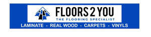

Trade Mark Journal No.2025/033 15 August 2025
UK00004238917 24 July 2025 (19,27,35)

- Class 19
- Flooring materials; wooden flooring; real wood flooring; engineered wood flooring; laminate flooring; flooring tiles; parquet flooring; bamboo flooring; tile flooring (not of metal); wood panelling; wall lining (not of metal); wall claddings (not of metal); skirting boards; beading for wooden flooring; beading for laminate flooring; beading for engineered flooring; scotia; screeding; leveller; adhesives suitable for flooring products.
- Class 27
- Floor coverings; carpets; rugs; carpet tiles; mats; linoleum floor coverings; underlay for flooring.
- Class 35
- Retail services connected with the sale of flooring, floor-coverings, flooring materials, wooden flooring, real wood flooring, engineered wood flooring, laminate flooring, flooring tiles, parquet flooring, bamboo flooring, tile flooring (not of metal), beading for wooden flooring, beading for laminate flooring, beading for engineered flooring, scotia, screeding, leveller, adhesives suitable for flooring products; The bringing together, for the benefit of others, of a variety of flooring, floor coverings, flooring materials, wooden flooring, real wood flooring, engineered wood flooring, laminate flooring, flooring tiles, parquet flooring, bamboo flooring, tile flooring (not of metal), beading for wooden flooring, beading for laminate flooring, beading for engineered flooring, scotia, screeding, leveller, adhesives suitable for flooring products, enabling consumers to conveniently compare and purchase those services.
Abdul Shakir
Representative: David Vizor